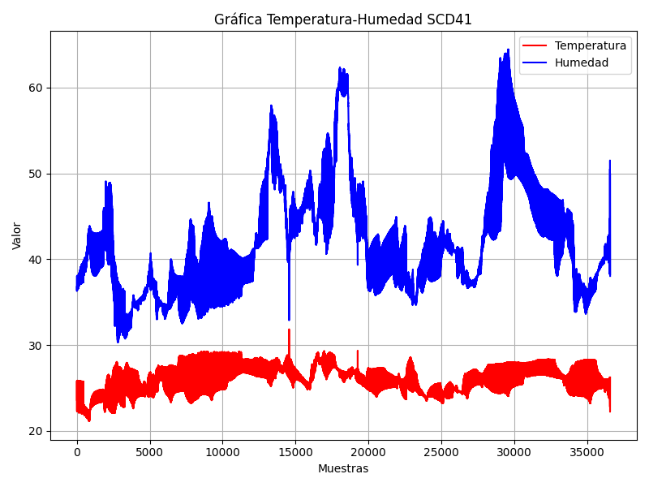

Manuel Pérez Ruiz - José Luis Argudo Garrido
En este documento se encuentra la descripción del proceso llevado a cabo en el pipeline para el correcto desarrollo de la práctica.
A continuación vamos a describir las distintas partes del pipeline, las cuales son: - Setup - Build - Figshare - Documentation
Cabe destacar que, previo a dichas partes, definimos los stages y las variables que vamos a usar.
En esta sección nos encargamos de actualizar e instalar las librerías necesarias para el script de Python que vamos a ejecutar, además de añadir los datos necesarios de GitHub para la correcta realización del ejercicio.
En esta sección simplemente clonamos el repositorio de Gitlab y ejecutamos el script de Python para generar la gráfica.
En esta sección nos vamos a encargar de descargar el cliente de Figshare para posteriormente, usando nuestro token, subir la imagen.
En esta sección nos encargamos de generar el archivo html a partir de la documentación en el formato markdown, además de sincronizar estos cambios con la rama en Github, lo que producirá un nuevo despliegue de Github Pages actualizado gracias a GitHub Actions.
